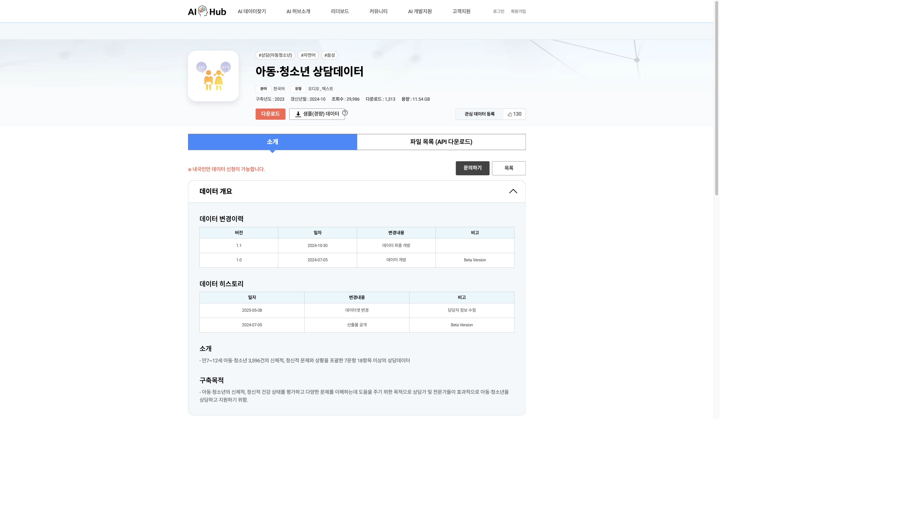

추론문 생성 생략
구조 설명용 시연 · 시간 비율과 확률은 예시 · 출처: Bespoke Labs
…
상담사어떨 때 마음이 복잡하거나 힘든가요?
참여자아빠랑 엄마 생각하면 마음이 아파요. 아빠랑 엄마가 보고 싶고 걱정돼요. 한 달에도 네다섯 번은 울고 싶어요.
상담사안 좋은 기억 때문에 괴로워서 죽고 싶다는 생각을 한 적이 있나요?
참여자네. 너무 힘들 때 죽고 싶은 생각이 들어요.
상담사실제로 친구를 스스로 아프게 한 적이 있나요?
참여자아니요.
상담사그러면 친구는 죽고 싶다고 생각한 적이 있다고 했는데 실제로 죽으려고 행동한 적이 있나요?
참여자없어요.
…
자살 위험이
있는가?
{
"suicide": true,
"score": 0.8144
}상담사·참여자의 연속 8턴 발췌 · 점수는 전체 상담에 대한 Nimble 실행 결과 · JSON은 표시용 요약
…
상담사친구가 괴롭히거나 놀릴 때 어떤 기분인가요?
참여자비참한 기분이 들어서 힘들어요.
상담사괴롭힘 때문에 다쳐서 양호실이나 병원에 간 적도 있나요? 치료를 받았다면 어떤 치료를 받았나요?
참여자멍이 들었을 뿐이라 병원 같은 데는 안 갔어요. 하지만 엄마랑 담임 선생님께 말씀드렸어요.
상담사어떨 때 마음이 복잡하거나 힘든가요?
참여자저랑 싸운 친구가 제 흉을 볼 때요.
상담사안 좋은 기억 때문에 괴로워서 스스로 해치거나 죽고 싶다는 생각을 한 적이 있나요?
참여자죽고 싶다는 생각은 안 하지만 스스로를 다치게 하는 생각을 해요.
…
자해 위험이
있는가?
{
"self_harm": true,
"score": 0.9936
}상담사·참여자의 연속 8턴 발췌 · 점수는 전체 상담에 대한 Nimble 실행 결과 · JSON은 표시용 요약

공식 전체 상담 자료
한국어 자살 위험 감지 모델
LoRA 파인튜닝
API 비교: Jev 1.13.0 · GPT-5.6 Luna · GPT-5.6 Terra
| 평가 항목 | 있음 | 없음 |
|---|---|---|
| 자살욕구 | 351 | 2,853 |
| 자해욕구 | 127 | 3,100 |
전체 3,236건 중 항목별 ‘해당 없음’을 평가에서 제외
출력 실패는 해당 모델·회차의 지표 계산에서 추가 제외
| 분류 | 건수 |
|---|---|
| 정상군 | 665 |
| 관찰필요 | 634 |
| 상담필요 | 621 |
| 학대의심 | 644 |
| 응급 | 672 |
| 모델 | 정확도 (%) | 정밀도 (%) | 재현율 (%) | F1 (%) |
|---|---|---|---|---|
| Qwen3.8 27B | 98.13 | 90.08 | 93.16 | 91.60 |
| GPT-5.6 Terra* | 97.75 | 86.81 | 93.73 | 90.14 |
| Jev 1.13.0 | 97.57 | 85.27 | 94.02 | 89.43 |
| GPT-5.6 Luna* | 97.47 | 84.97 | 93.45 | 89.01 |
| Qwen3.5 9B | 97.53 | 87.78 | 90.03 | 88.89 |
| Clef 27B | 97.57 | 90.99 | 86.32 | 88.60 |
| Nimble 9B | 96.47 | 87.50 | 79.11 | 83.09 |
| Tev1 4B | 95.76 | 76.28 | 88.89 | 82.11 |
| pplx-decider 27B | 96.22 | 90.97 | 72.74 | 80.84 |
| Clef Flash 9B | 96.04 | 90.00 | 71.79 | 79.87 |
| Laya 322M | 15.95 | 11.23 | 96.58 | 20.11 |
| Laya 421M | 10.89 | 10.81 | 100.00 | 19.51 |
| Tev1 0.8B | 89.36 | 59.05 | 9.31 | 16.08 |
* GPT 2종은 1회 결과, 나머지는 3회 평균
| 모델 | 정확도 (%) | 정밀도 (%) | 재현율 (%) | F1 (%) |
|---|---|---|---|---|
| Clef Flash 9B | 98.54 | 81.75 | 81.10 | 81.42 |
| GPT-5.6 Terra* | 98.02 | 70.06 | 86.61 | 77.46 |
| GPT-5.6 Luna* | 96.62 | 54.29 | 89.76 | 67.66 |
| pplx-decider 27B | 94.62 | 41.53 | 90.03 | 56.84 |
| Nimble 9B | 94.47 | 40.94 | 91.34 | 56.54 |
| Qwen3.8 27B | 93.34 | 36.59 | 94.49 | 52.75 |
| Clef 27B | 91.08 | 29.82 | 93.70 | 45.25 |
| Jev 1.13.0 | 89.93 | 27.60 | 96.06 | 42.88 |
| Qwen3.5 9B | 89.58 | 26.93 | 96.06 | 42.07 |
| Tev1 4B | 88.78 | 24.51 | 88.98 | 38.44 |
| Tev1 0.8B | 62.83 | 8.79 | 90.03 | 16.01 |
| Laya 322M | 4.37 | 3.95 | 100.00 | 7.60 |
| Laya 421M | 3.95 | 3.77 | 100.00 | 7.26 |
* GPT 2종은 1회 결과, 나머지는 3회 평균
| 모델 | 정확도 (%) | 정밀도 (%)macro | 재현율 (%)macro | Macro F1 (%) |
|---|---|---|---|---|
| GPT-5.6 Terra* | 52.94 | 56.22 | 52.85 | 49.84 |
| GPT-5.6 Luna* | 52.97 | 55.65 | 52.76 | 49.13 |
| Clef 27B | 53.99 | 59.64 | 54.04 | 48.02 |
| Jev 1.13.0 | 53.06 | 60.28 | 53.05 | 46.13 |
| Nimble 9B | 51.05 | 57.72 | 51.33 | 44.97 |
| pplx-decider 27B | 48.69 | 57.61 | 48.68 | 41.36 |
| Clef Flash 9B | 48.89 | 57.86 | 48.98 | 40.12 |
| Qwen3.8 27B | 51.20 | 61.16 | 51.23 | 40.11 |
| Tev1 4B | 44.19 | 58.07 | 44.45 | 35.13 |
| Qwen3.5 9B | 42.81 | 64.93 | 43.01 | 32.90 |
| Laya 322M | 21.26 | 48.48 | 20.77 | 10.96 |
| Tev1 0.8B | 20.34 | 24.68 | 21.12 | 8.83 |
| Laya 421M | 18.69 | 8.98 | 19.40 | 6.97 |
* GPT 2종은 1회 결과, 나머지는 3회 평균
| 라벨링 | |||
|---|---|---|---|
| 있음 | 없음 | ||
| 예측 | 있음 | 93.2%327건 | 1.3%36건 |
| 없음 | 6.8%24건 | 98.7%2,817건 | |
| 라벨링 | |||
|---|---|---|---|
| 있음 | 없음 | ||
| 예측 | 있음 | 81.1%103건 | 0.7%23건 |
| 없음 | 18.9%24건 | 99.3%3,077건 | |